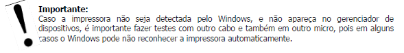
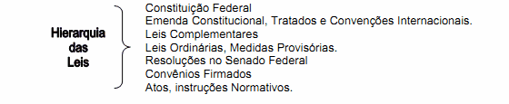
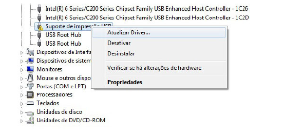
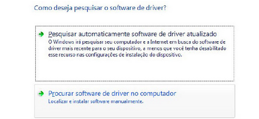
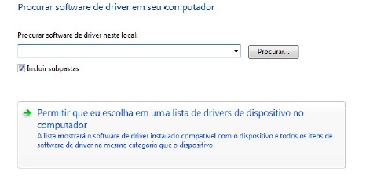
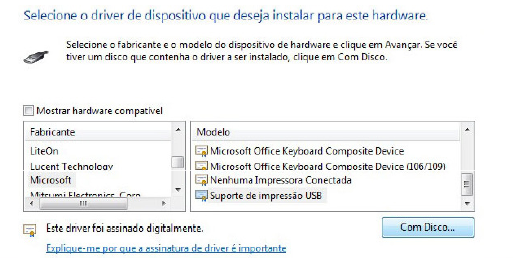
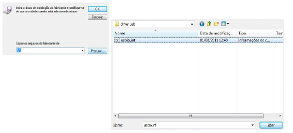
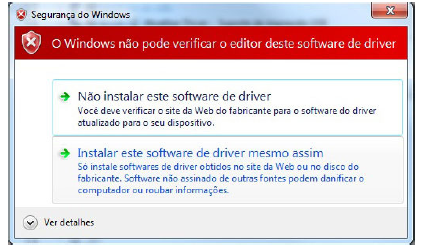
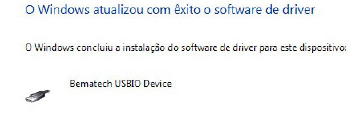

Bamatech USB |

|
Bamatech USB |
|
Instalando o driver USB
• Após o download do pacote de dlls e drivers, você precisa descompactar
• Certifique-se de o usuário logado tem permissões de administrador, para
que não ocorram problemas durante a instalação;
os arquivos em uma pasta, esta pode ser de sua escolha, já que estamos no
momento só instalando o driver USB das impressoras;
• Conecte a impressora no computador e aguarde que o Windows detecte a
impressora como um “dispositivo desconhecido”.

Instalando o driver USB
O primeiro passo do processo de instalação da impressora, é acessar o
gerenciador de dispositivos dentro do painel de controle do Windows (o acesso
pode ser feito pelo ícone sistema do painel de controle).
Nesta tela , a impressora já foi detectada pelo Windows, mas ainda sem o driver
correto instalado.

Clique com o botão direto do mouse, na impressora, e no meu que irá surgir
selecione a opção “Atualizar Driver”...

Ao clicar em “Atualizar Driver”, uma nova janela surgirá, e nela você deve definir
como será feita a instalação do driver, no nosso caso, a instalação deve ser feita de
modo manual, assim selecione a opção: “Procurar Software de driver neste
computador”...

Nesta próxima janela selecione a opção “Permitir que eu escolha em uma lista
de drivers...” ,dessa forma continuamos a seguir o processo de instalação do driver
de forma manual, sem que Windows faça a pesquisa automática pelo driver, isso
evita problemas no processo de instalação do driver, como conflitos ou falhas de
instalação, já que todo o processo é feito passo a passo manualmente.

Agora, temos na janela de instalação uma lista de dispositivos onde nossa impressora
irá aparecer como “Suporte de Impressão USB”, logo abaixo dessa lista de
dispositivos, clique no Botão “Com Disco...”

Agora, você deve clicar no botão procurar, e selecionar dentro da pasta onde
descompactou o pacote de dlls os drivers (USBio.inf no caso do Windows 32 bits , ou
o driver USBio64.inf no caso do Windows 64 bits).

Para prosseguir com a instalação do driver, na próxima tela o Windows pedirá a
confirmação de instalação do driver, esse pedido é feito reconheça o driver USB da
impressora como confiável, sendo assim clique na opção “Instalar esse software
de driver mesmo assim...”

Quando o a instalação do driver for concluída, a seguinte janela irá surgir:

Com o driver já instalado, basta abrir o arquivo de configuração da dll (Bemafi32.ini
ou Bemafi64.ini), e na opção porta configurar a USB como conexão da impressora:
Pronto!
O Driver USB já está instalado!